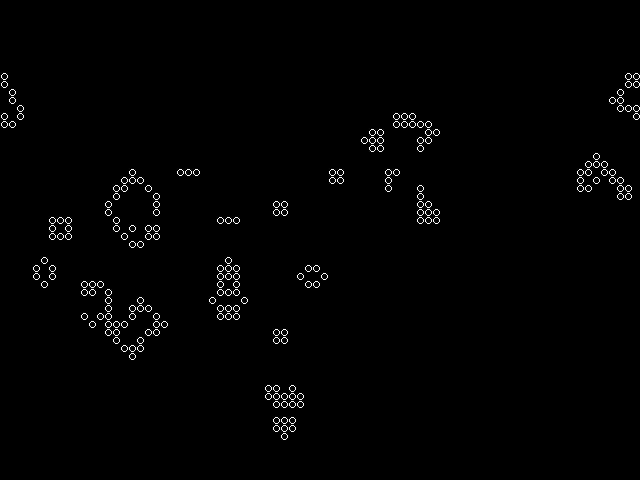

Проект 1
Пример отчета по лабараторной "Игра в жизнь".
Лабараторная написанас использованием моего движка и параллельными вычислениями.
Сама игра силулировала примитивное поведение жизни с определенным алгоритмом.
Отчет по игре в жизньМеня зовут Иван Гришин, я студент разработчик ПО и веб разработчик.
За это время я участвовал в таких проектах как:
Пример отчета по лабараторной "Игра в жизнь".
Лабараторная написанас использованием моего движка и параллельными вычислениями.
Сама игра силулировала примитивное поведение жизни с определенным алгоритмом.
Отчет по игре в жизньПример работы телеграмм бота. Этот бот был создан для поддержки онлайн магазина.
Через него можно было отслеживать и создавать заказы.
Пример того, как выглядел интерфейс у движка.
Использовался он в основном для отрисовки и работы с 2D изображениями.
Но если очень захочется можно отрисовать 3D объекты.
Email: dowasky10@gmail.com
Телефон: +7 996 415 44 59
Соцсети: